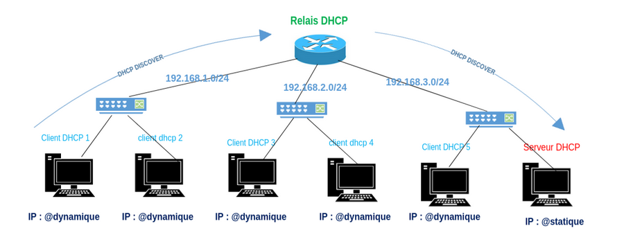

L’objectif était de mettre en place différents services réseau comme un serveur de transfert fichiers FTP, un serveur de messagerie, les services DNS, DHCP et SSH. Par groupe de deux sur 5 séances de trois heures, nous avons configuré ces services sur un serveur Linux de manière semi encadré. Nous avons utilisé des machines virtuelles pour simuler un réseau local, ce qui nous a permis de tester les services sans risque d'interférer avec un réseau réel.
Mise ne place de Services Réseaux
Le projet a débuté par la mise en place du service FTP via le serveur vsftpd. Nous avons créé et configuré des utilisateurs, ajusté les permissions d’accès aux répertoires, et testé les connexions à l’aide de FileZilla ainsi que du terminal. Nous avons également utilisé Wireshark pour analyser les trames échangées entre client et serveur, ce qui nous a permis de mieux comprendre les étapes d’authentification et de transfert.
Ensuite, nous avons déployé le service DHCP avec isc-dhcp-server. Nous avons appris à définir une plage d’adresses IP dynamiques, configurer les passerelles par défaut et observer les échanges DHCP (DISCOVER, OFFER, REQUEST, ACK) via Wireshark. Nous avons aussi exploré le fonctionnement avec plusieurs serveurs DHCP sur un même réseau et configuré un relais DHCP pour distribuer les adresses à travers un routeur.

Pour le service DNS, nous avons utilisé Cisco Packet Tracer afin de simuler différents scénarios : résolution locale de noms, interconnexion entre deux domaines, introduction d’un serveur root DNS, puis hiérarchisation complète avec délégation de zone. Cela nous a permis de comprendre la logique d’un DNS distribué et son rôle central dans les communications réseau.
Nous avons aussi installé et sécurisé un accès distant avec SSH, en utilisant openssh-server. Après avoir configuré les utilisateurs, nous avons testé les connexions par mot de passe, puis mis en place l’authentification par clés. Nous avons également expérimenté les tunnels SSH pour chiffrer le trafic HTTP entre un client et un serveur Apache. Cette partie a renforcé notre compréhension de la sécurité réseau.
Enfin, nous avons mis en place un serveur de messagerie basé sur Postfix (SMTP) et Dovecot (POP3). Après avoir configuré les comptes utilisateurs, nous avons réalisé des tests d’envoi et de réception de mails via Telnet. Nous avons aussi appris à vérifier les ports d’écoute, configurer les services, et accéder aux boîtes mail stockées sur le serveur.
Ce projet m’a permis de développer deux compétences essentielles : d’une part, la capacité d’apprentissage autonome, qui m’a donné une meilleure maîtrise des outils d’administration réseau ; d’autre part, la capacité de résolution de problèmes techniques, qui a renforcé ma compréhension des protocoles et services réseau fondamentaux.